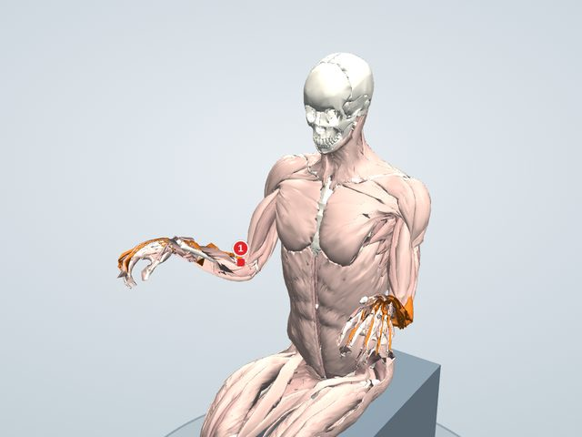

体の不調図鑑
テニス肘(肘の外側の痛み)
物をつかむ・持ち上げる・ひねるときに、肘の外側が痛む状態。上腕骨外側上顆炎と呼ばれ、テニスをする人に限らず、パソコン作業や家事などで手首をよく使う人に多く見られます。
3Dで原因の場所と対策を見る 無料で見られます

原因になっている場所
- 上腕骨の外側上顆(手首を反らす筋の起始部)炎症・痛みが起きやすい
手首や指を反らす筋の腱が集まって付く所で、物を握るたびに引っぱられ、腱に小さな傷や炎症が起きます(とくに短橈側手根伸筋)。
体の中で起きていること
手首や指を反らす筋(短橈側手根伸筋・長橈側手根伸筋・総指伸筋)は、肘の外側の骨の出っぱり(外側上顆)に集まって付いています。物を握るときにも、手首を固定するためにこれらの筋が働くため、使いすぎると付け根の腱に小さな傷や炎症が起こります。とくに短橈側手根伸筋の腱が中心と考えられています。
きっかけ
- 手首を反らす・物を握る動作のくり返し(キーボード・マウス・フライパン・ラケット)
- 指や手首を伸ばす筋の使いすぎ
- 加齢による腱の変化(40〜50代に多い)
原因と対策
原因になっている筋の状態を「弱い」「こっている」「縮んでいる」の3つに分け、それぞれに対応する対策(使う・ほぐす・ストレッチ)を組にしています。「中心」は、この不調でとくに大切な組です。
原因緊張が続いて、こっている 中心
- 短橈側手根伸筋
- 長橈側手根伸筋
- 総指伸筋
- 回外筋
- 腕橈骨筋
手首を反らす・物を握る動作のくり返しで、前腕の外側の筋が使いすぎて張りつめ、付け根の腱を引っぱり続けています。
対策ほぐす
前腕の外側の筋をやさしくほぐし、付け根を引っぱる力をゆるめます。痛む骨の出っぱりは押しません。
- 前腕の外側(手首・指を反らす筋)
- 肘の少し下、前腕の外側の筋を、反対の手の親指でやさしく押してほぐす。痛む肘の骨の出っぱりは強く押さない。
対象: 短橈側手根伸筋・長橈側手根伸筋・総指伸筋
原因縮んで硬くなっている
- 短橈側手根伸筋
- 長橈側手根伸筋
- 総指伸筋
手首を反らす筋が縮んだまま硬くなっています。
対策ストレッチ
手首を曲げるストレッチで前腕の外側を伸ばします。
- 手首を曲げるストレッチ: 肘を伸ばして手のひらを下に向け、反対の手で手の甲を手前に引いて、前腕の外側を15〜30秒伸ばす(このモデルには手首の腱の通り道がないため、3Dでは再生できません)
アプリでは、それぞれの対策の動きで使われる筋(赤)・伸ばされる筋(青)を3Dで再生し、ほぐす場所を表示できます。
生活の工夫
- 物を持つときは、手のひらを上に向けて持つ
- マウス・キーボードの位置を見直し、手首を反らしたままにしない
- 痛みが強いときは使う量を減らす(サポーターも一つの方法です)
こんなときは医療機関へ
肘が腫れている、しびれがある、指が動かしにくい、けがの後の痛みは、整形外科を受診してください。
ここで紹介しているのは一般的な情報で、診断や治療の代わりにはなりません。痛みやしびれがあるとき、症状が続くときは医療機関を受診してください。ストレッチや運動は痛みのない範囲で行い、痛みが強くなる場合は中止してください。